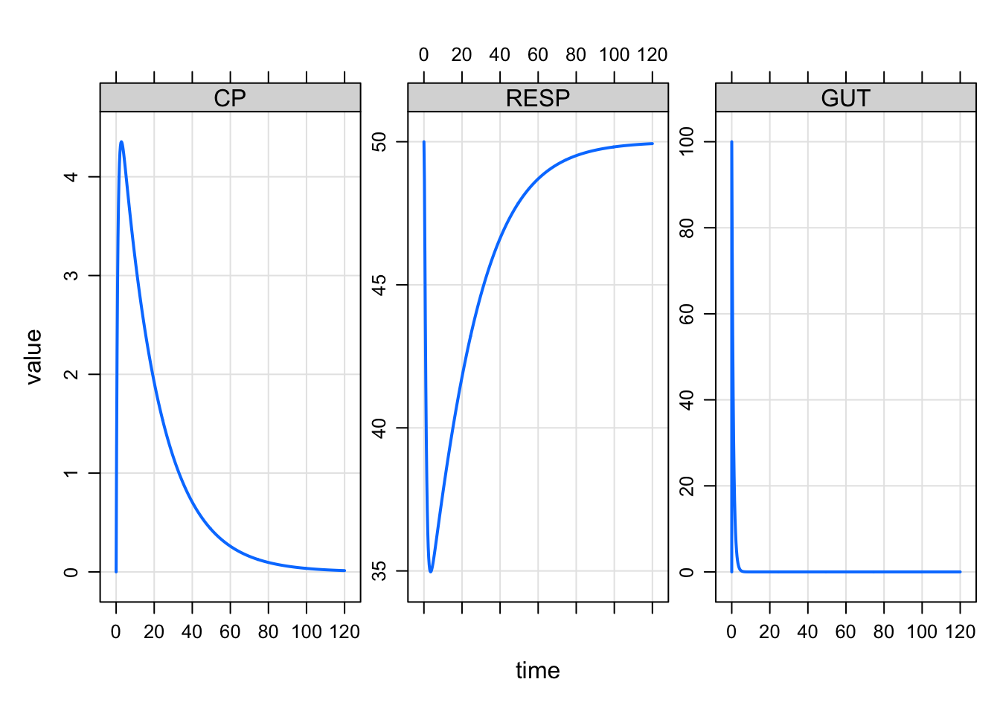
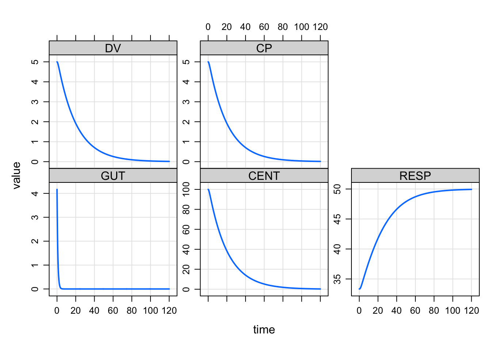

This blog post shows some of the new features that came into mrgsolve starting with version 0.10.0 (October 2019) and 0.10.1 (February 2020). The purpose is to illustrate what is possible rather than detailed documentation.
This is a big topic, so I put together a separate blog entry to look at new features around steady state.
Since the beginning, we have maintained a model inside mrgsolve itself that we call house. It’s a basic PKPD model that we use to test and demo. The interesting thing about this model is that it is compiled when mrgsolve is installed. So the model is always ready to go.
It use to be unexported so you would have to access the model like this:
mod <- mrgsolve:::house()The ::: means that we go into the mrgsolve namespace to call the function that returns the model object.
Now, house is exported
mod <- house()There is a series of dplyr-like functions that allow you to work on the simulation output object (mrgsims) while keeping it a simulation output object. Starting in version 0.10.1, we have a select_sims function which allows you to select certain columns in the simulation object
out <- mrgsim(house(), ev(amt = 100))
out . Model: housemodel
. Dim: 482 x 7
. Time: 0 to 120
. ID: 1
. ID time GUT CENT RESP DV CP
. 1: 1 0.00 0.00 0.00 50.00 0.000 0.000
. 2: 1 0.00 100.00 0.00 50.00 0.000 0.000
. 3: 1 0.25 74.08 25.75 48.68 1.287 1.287
. 4: 1 0.50 54.88 44.50 46.18 2.225 2.225
. 5: 1 0.75 40.66 58.08 43.61 2.904 2.904
. 6: 1 1.00 30.12 67.83 41.38 3.391 3.391
. 7: 1 1.25 22.31 74.74 39.58 3.737 3.737
. 8: 1 1.50 16.53 79.56 38.18 3.978 3.978out <- select_sims(out, RESP, CP)
out. Model: housemodel
. Dim: 482 x 4
. Time: 0 to 120
. ID: 1
. ID time RESP CP
. 1: 1 0.00 50.00 0.000
. 2: 1 0.00 50.00 0.000
. 3: 1 0.25 48.68 1.287
. 4: 1 0.50 46.18 2.225
. 5: 1 0.75 43.61 2.904
. 6: 1 1.00 41.38 3.391
. 7: 1 1.25 39.58 3.737
. 8: 1 1.50 38.18 3.978Notice that ID and time are retained. The motivation here is to allow you to request many columns and then pare back so that, for example, plotting is more convenient
plot(out)Other functions include
mutate_sims(out, name = "kyle"). Model: housemodel
. Dim: 482 x 5
. Time: 0 to 120
. ID: 1
. ID time RESP CP name
. 1: 1 0.00 50.00 0.000 kyle
. 2: 1 0.00 50.00 0.000 kyle
. 3: 1 0.25 48.68 1.287 kyle
. 4: 1 0.50 46.18 2.225 kyle
. 5: 1 0.75 43.61 2.904 kyle
. 6: 1 1.00 41.38 3.391 kyle
. 7: 1 1.25 39.58 3.737 kyle
. 8: 1 1.50 38.18 3.978 kylefilter_sims(out, time > 2). Model: housemodel
. Dim: 472 x 4
. Time: 2.25 to 120
. ID: 1
. ID time RESP CP
. 1: 1 2.25 35.84 4.312
. 2: 1 2.50 35.46 4.345
. 3: 1 2.75 35.22 4.355
. 4: 1 3.00 35.07 4.348
. 5: 1 3.25 34.99 4.329
. 6: 1 3.50 34.97 4.302
. 7: 1 3.75 34.98 4.267
. 8: 1 4.00 35.03 4.229Notice in all of these operations, the mrgsims object is returned. If you want to mutate or select and get a tibble back, then just call
mutate(out, name = "Kyle"). # A tibble: 482 × 5
. ID time RESP CP name
. <dbl> <dbl> <dbl> <dbl> <chr>
. 1 1 0 50 0 Kyle
. 2 1 0 50 0 Kyle
. 3 1 0.25 48.7 1.29 Kyle
. 4 1 0.5 46.2 2.23 Kyle
. 5 1 0.75 43.6 2.90 Kyle
. 6 1 1 41.4 3.39 Kyle
. 7 1 1.25 39.6 3.74 Kyle
. 8 1 1.5 38.2 3.98 Kyle
. 9 1 1.75 37.1 4.14 Kyle
. 10 1 2 36.4 4.25 Kyle
. # … with 472 more rowsThe plot method has so far required you to enter a formula to select columns to plot
out <- mrgsim(house(), ev(amt = 100))
plot(out, CP~time)This works well is many circumstances. The new feature here is that you can list the columns to plot as a character vector. Let’s mrgsolve determine what column to put on the x-axis
plot(out, "CP RESP GUT")
The motivation came from simulations that I was doing where there were a lot of columns in the output and I had many different panel plots I wanted to make. It was helpful to select the columns in a character vector rather than typing out the formula
mod <- modlib("pbpk")
out <- mrgsim(mod, ev(amt = 100))set1 <- "Aad Abo Abr Ahe"
set2 <- "Ave Are Ask Asp Ali Aki"
plot(out, set1)plot(out, set2)As you expect with mrgsolve, there is no need to specify a real R vector for listing the column names. We’ll split a string on space or comma. For this feature, we’ll also split on newline (helpful when the names are very long or you just want some structure to the layout
set3 <- '
Aad Abo Abr Ahe
Ave Are Ask Asp Ali Aki
'
plot(out, set3)Query the model object for the names of variables that you could ask for in a simulation
outvars(house()). $cmt
. [1] "GUT" "CENT" "RESP"
.
. $capture
. [1] "DV" "CP"Some names are compartments, some are captured.
To make an event object
ev(amt = 100). Events:
. time amt cmt evid
. 1 0 100 1 1We can reference names in the object during construction
ev(amt = 100, rate = amt/2). Events:
. time amt rate cmt evid
. 1 0 100 50 1 1I can also access columns in the event object
x <- ev(amt = 100, rate = amt/3)
x$rate. [1] 33.33333And we have been able to mutate these objects for a while now
x <- ev(amt = 100)
mutate(x, rate = amt / 5). Events:
. time amt rate cmt evid
. 1 0 100 20 1 1Check out the tinf argument to say how long you want an infusion to last
ev(amt = 100, tinf = 3). Events:
. time amt rate cmt evid tinf
. 1 0 100 33.33333 1 1 3You might see this
dose <- ev(amt = 100)
try(mrgsim(dose, mod)). Error : the first argument to mrgsim must be a model objectWhich just means you passed things in in the wrong order.
mrgsolve can now run a zero-order infusion to steady state. Set amt to 0, rate to something positive and ss to 1. We change recsort just to show that things start at steady state.
ssinf <- ev(amt = 0, rate = 5, ss = 1)
mrgsim(house(), event = ssinf, recsort=3) %>% plot
You can also set rate to -1 if you are modeling the rate. But it can’t be set to -2.
For a while, you could access model parameters with $ operator
mod <- house()
mod$CL. [1] 1Now you can access initial compartment values
mod$RESP. [1] 50And other goodies
mod$end. [1] 120Sometimes when writing a model, we would like to know the number of a compartment when we only know the name. There is a plugin to make that doable now
$CMT CENTRAL
$PLUGIN N_CMT
$MAIN
if(CMT==N_CENTRAL) {
// ......
}mrgsolve: mrgsolve.github.io | metrum research group: metrumrg.com